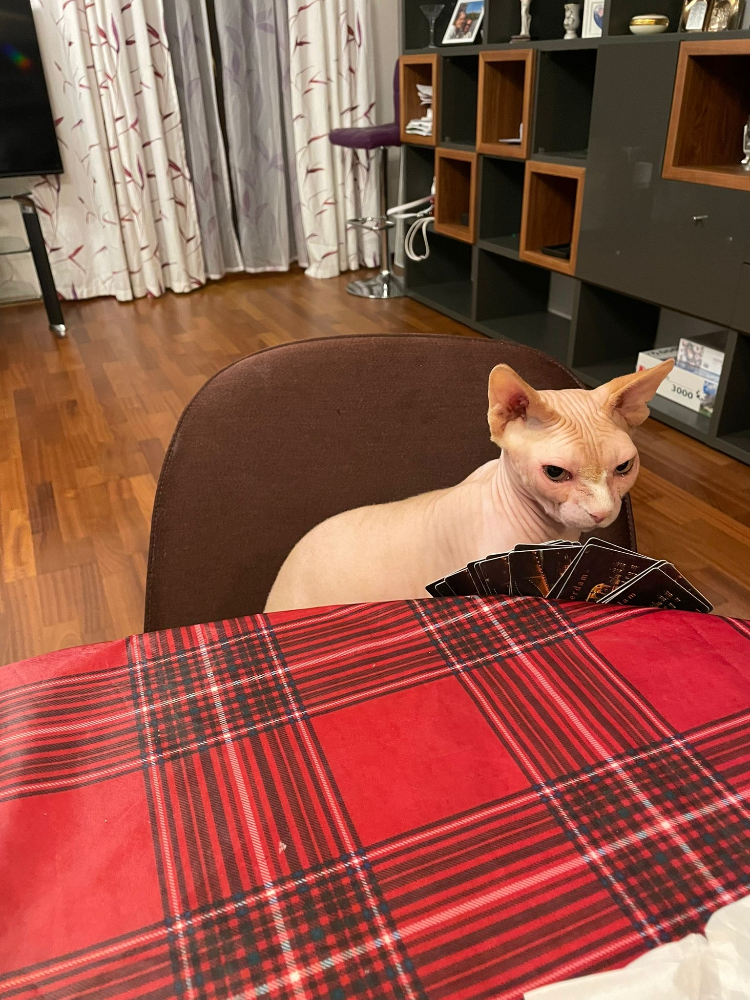
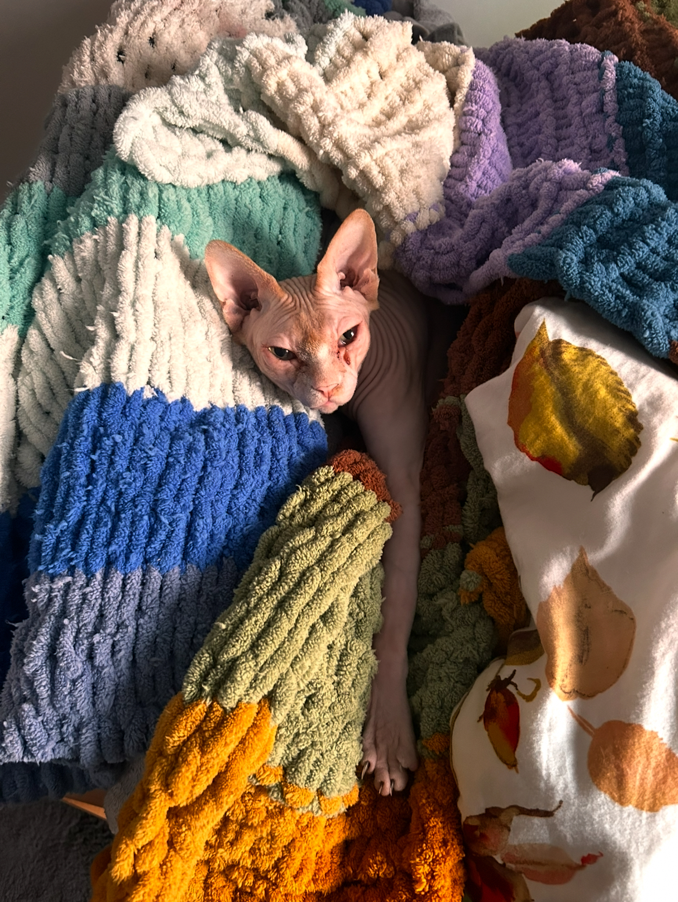

Shiro is a playful, loving cat who enjoys napping in the sun and chasing after toy mice. With bright eyes and a fluffy coat, he melts hearts wherever he goes.
Shiro's Gallery


Fun Facts About Shiro
Shiro loves ham more than anything °❀⋆.ೃ࿔*:･
He sleeps for 16 hours a day ˚.🎀༘⋆
His favorite toy is a small kangaroo ⋆｡‧˚ʚ🧸ɞ˚‧｡⋆
He is an adorable ball of furr ૮₍ ˶ᵔ ᵕ ᵔ˶ ₎ა
He loves traveling to different places 𓇼 ⋆.˚ 𓆉 𓆝 𓆡⋆.˚ 𓇼